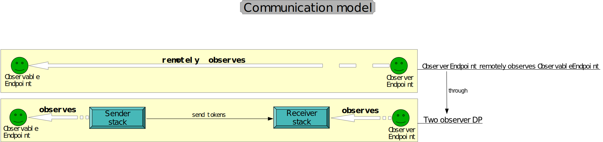
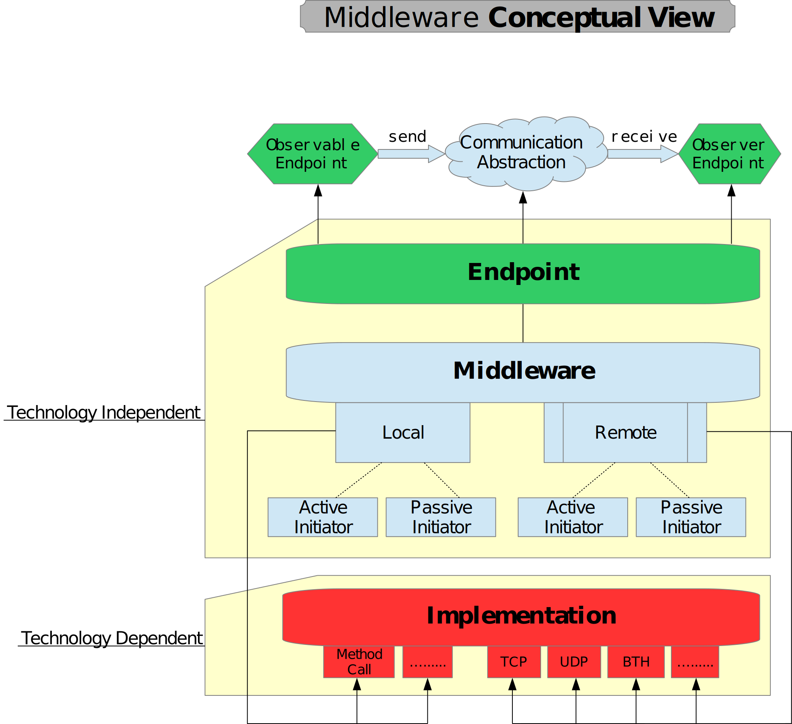
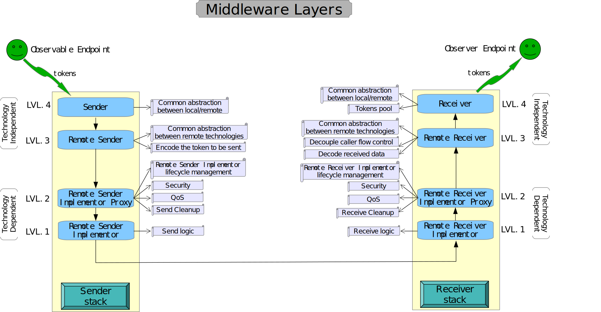
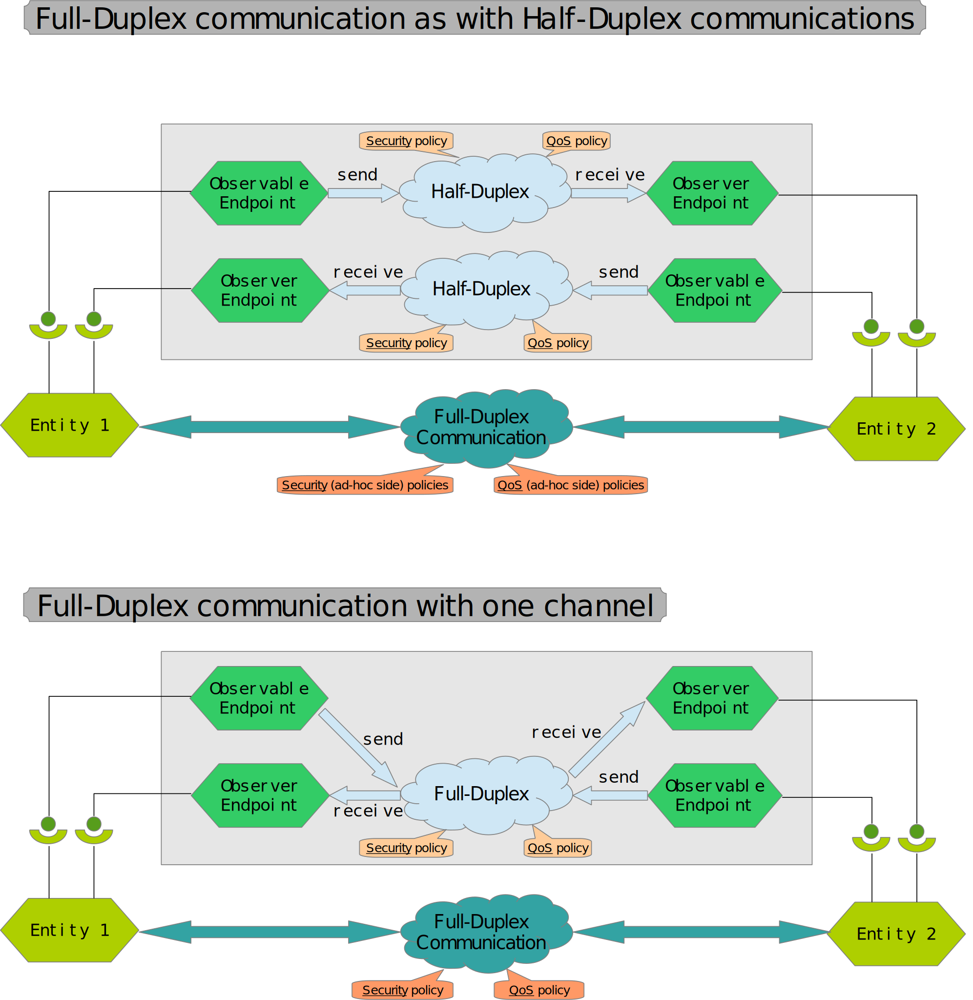

Middleware overview
Middleware is a communication model that abstracts the communication details in a uniform architecture between different communication modes (local / remote) and different technologies (e.g. bluetooth, tcp/ip, http).
It allows to decouple the caller flow control, mediating between the communication actions (send, receive).
It encourages the use of QoS and Security policies in the proper layer, allowing to reuse them for different technologies.
The fundamental idea
The middleware consists in a remote observer pattern. If we remember the GoF observer DP, there are an observable entity and an observer entity. Those entities are called endpoints in the middleware.
An entity can behave as one or both of those endpoints, which define the operations that the entity can perform in the communication channel:
- ObservableEndpoint: publishes tokens in the registered senders.
- ObserverEndpoint: receives tokens from the subscribed receivers.
Following this way, we can define a communication channel as a many-to-many tuple: (senders, receivers), where (generally) a sender sends tokens to the connected receivers and a receiver receives tokens from the connected senders.
The typical activity flow involves in: Senders observe an ObservableEndpoint. When an ObservableEndpoint publishes an IToken to its registered senders, it triggers the local/remote send operation. The ObserverEndpoints observe the Receiver which receives tokens (the receive operation). When it receives a token it notifies the subscribed ObserverEndpoint for the availability of the new token.
From this conceptual view we can state that an endpoint doesn't know anything about the underlying technology used. It doesn't even know if the communication is local or remote.
This is also achieved by separating the flow control of the entity from the flow control of the middleware (if the communication is remote).
Layers stack
To define the middleware we have defined 4 abstraction layers (as ISO did for OSI). Each layer provides services to the layer above and is served by the layer below it.
Communication modes
The flexibility of the middleware provides us a lot of different communication modes. The communication mode is chosen at configuration time.
The communication channel can be configured as half-duplex or full-duplex.
An entity can be in the same time an ObservableEndpoint and an ObserverEndpoint if it wants to receive some feedback from the channel.
